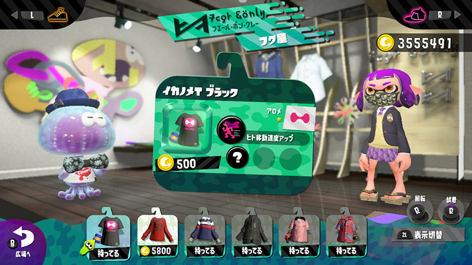
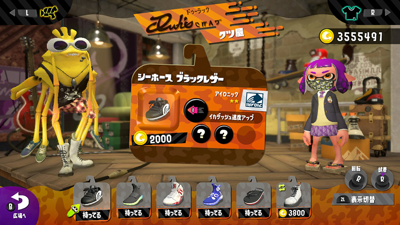
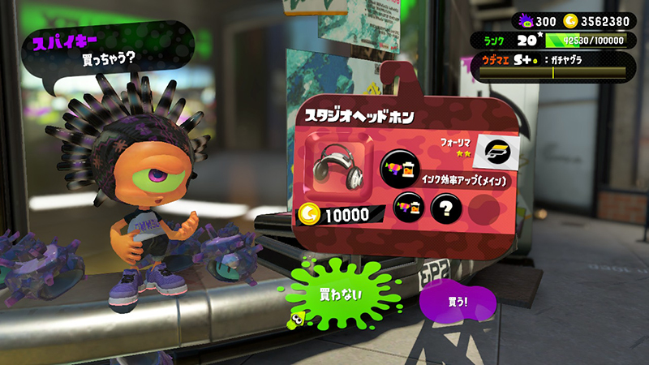
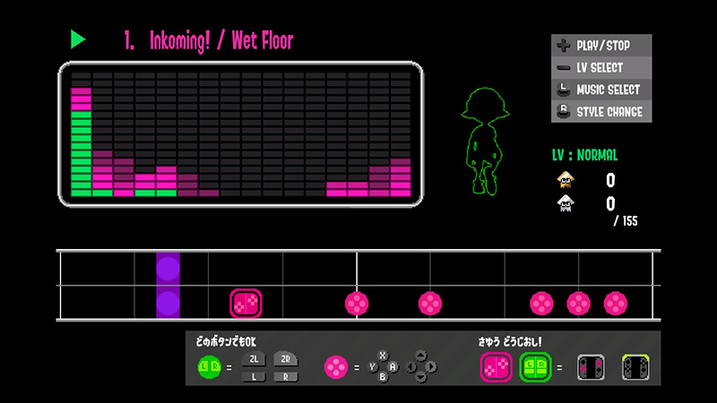

装备系统
游戏中装备分为帽子、衣服、鞋子三个部位，装备外型只影响美丑，对其他游戏性并无影响。
装备可以在各商店购买，各商店中每天出售的装备不同，可用金币购买。
同时可以通过[Nintendo Switch Online]、amiibo订购，也可以通过注文订购广场上玩家非限定装备。在大型节日,官方也会发放一些特殊限定服饰。
帽子商店
衣服商店
鞋子商店
每件装备都自带1个大技能,1到3个小技能。
装备详情
装备上较大图标为主技能，装备上较小图标为副技能。每件装备固定拥有1个主技能，在装备店购买时，就能看到该装备的主技能，不需要解锁。带问号的图标是未解锁的副技能，需要通过对战获取经验解锁。
不同星级装备升级解锁技能所需要的经验不同，1星(2k/6k/10K)2星(3k/7k/11K)3星(4k/8k/12K)。
如果副技能孔未满3个，则可以通过[超级海螺]打孔。
小数点前的数字，指的是装备的主技能数。小数点后的数字，指的是装备的副技能数。 当一件装备主技能和副技能都为同一个A技能时候，我们称这件装备叫做1.3装备或A1.3。当一件装备副技能都为同一个B技能时候，我们可以称这件装备叫做B0.3。
技能介绍
技能分为两种，主技能和副技能。这里的主副技能分类代表了技能会出现的位置，分类在主技能的只会出现在主技能，而副技能可以出现在主技能或副技能位置上。
每个部位有特定的主技能，只会在该部位的装备主技能位置出现。
每件装备都有一个品牌，每个品牌会对应一个易获取副技能和不易获取副技能。
| 技能名称 | 技能描述 | 出现位置 | 易获取品牌 | 难获取品牌 |
|---|---|---|---|---|
| 复活回归 | 头部限定技能。被击杀复活后的20秒内，降低主副武器墨水消耗、提升墨水回复速度、游速、人形走速和特殊武器能量槽充能速度，能力值各上升1个主技能。 | 头部 | 无 | 无 |
| 开局强化 | 头部限定技能。对局开始后30秒内提升游速、走速、安全鞋各5个小技能。在生效的时间内，你的击杀和助攻都可以让持续时间延长7.5秒。 | 头部 | 无 | 无 |
| 终场强化 | 头部限定技能。涂地对局结束前30秒之内，降低主副武器墨水消耗和提升墨水回复各8个小技能的效果。在进行真格对战时，除了之前最后30s之外，当对方队伍的计数器为50或以下时，该技能开始生效，并且随着计数器减少而继续逐步增强。 一旦对方分数达到30，这个技能效果将到达最大化。 | 头部 | 无 | 无 |
| 逆境強化 | 头部限定技能。当队友掉线或死亡，人数少于敌方队伍人数时，特殊武器能量槽会自动充能，人数差异越大，充能速度越快。 | 头部 | 无 | 无 |
| 隐游 | 衣服限定技能。减少乌贼状态下移动溅出的墨水，但乌贼形态移动速度下降。 | 衣服 | 无 | 无 |
| 热敏墨水 | 衣服限定技能。短时间16秒内可以在一定距离(40左右)看到被主武器墨水击中的敌人。在远处可透过障碍物看到敌人，近距离时则无效。 | 衣服 | 无 | 无 |
| 死亡惩罚 | 衣服限定技能。被你击杀的敌人，死亡后SP减少量增多同时复活时间增加。而玩家自身死亡也一样。如果被击杀的敌人有复活缩短(如果生效)，则效果将被减低为85％ | 衣服 | 无 | 无 |
| 能力翻倍 | 祭典衣服限定技能，能让副技能效果翻倍(*2)。会跟衣服限定主技能冲突，如复仇，隐游等等。 | 衣服 | 无 | 无 |
 隐跳 隐跳 |
鞋子限定技能。超级跳跃时，一定距离内敌人无法看见落点提示。超级跳跃时间会增加。 | 脚部 | 无 | 无 |
| 対物攻击 | 鞋子限定技能。攻击玩家以外物体时，伤害增加，例如真格强鱼的鱼泡、副武器的花洒、特殊武器仓鼠球,泡泡,墨甲,nice弹,还有场景中的海绵。 | 脚部 | 无 | 无 |
| 落地翻滚 | 鞋子限定技能。超级跳跃或使用特殊武器喷射背包后，可以在落地时使用类似武器双枪的翻滚。 | 脚部 | 无 | 无 |
 防爆DX 防爆DX |
被敌人炸弹类副武器或是SP爆风命中时，受到的伤害减轻。同时可以缩短被标记的持续时间。 | 全部 | ||
| 回墨 | 在人形和乌贼状态下的回墨速度都得到了增加。 | 全部 | ||
| 安全鞋 | 踩入敌人墨水中受到的最大伤害和减速效果下降并且有一定的地面墨水免伤时间。 | 全部 | ||
| 主省 | 主武器的墨水消耗减少，比较适合对于需要消耗大量墨水的武器。 | 全部 | ||
| 副省 | 副武器的墨水消耗减少，携带该技能对墨水回复速度和技能使用墨水回复锁定时间没有影响。 | 全部 | ||
| 复活缩短 | 在没有击杀敌人但自己又被击杀时，复活时间缩短。即两次被敌人击杀之间，玩家没有击杀敌人直接死亡，那么这次复活时间就会缩短。 游戏刚开局第一次死亡无法触发复活时间缩短。落水、掉落悬崖等死法也无法触发。 | 全部 | ||
| 超级跳跃 | 超级跳跃的释放时间缩短。可将超级跳跃准备时间减少37.5%，并将超跳跃行进时间减少40%。很适合和复活时间缩短技能搭配。 | 全部 | ||
| 走速 | 人形态移动速度提升，但是对于滚筒和笔刷的推动是没有效果的。 | 全部 | ||
| 游速 | 乌贼形态游泳速度提升。较为通用的技能，经常用来抵消乌贼忍者的移动速度降低。 游泳速度取决于玩家装备的主武器的重量类别。轻型武器的游泳速度提高20%，武器玩家提高25%，重型武器提高38%。 | 全部 | ||
| SP加速 | 在战斗中，特殊技能能量槽(SP)增加速度增加。 | 全部 | ||
| SP保留 | 死亡时，特殊武器积蓄值减少量下降，默认玩家死亡时特殊武器积蓄值减少死亡前的50%。 | 全部 | ||
| SP强化 | 特殊武器性能提升，每种不同的特殊招式会获得的性能提升效果不同，大致分为扩大特殊招式的范围、延长持续时间、提升耐久杀伤力等。 | 全部 | ||
| 副强 | 副武器的性能提升，每种不同的副武器会获得的性能提升效果不同，大致分为扩大副武器投射距离、飞行速度等。 | 全部 | ||
| 主强 | 主武器的性能提升，每种不同的主武器会获得的性能提升效果不同，大致分为增加伤害、增加射程、减少乱数等。 | 全部 |
技能养成
装备选择
先明确自己需要什么样的装备，由于小技能和孔数是可以控制的，因此在选择装备上，重点是主技能和品牌(后期是外观)。
获取技能
得到满意的装备后，就可以通过普通涂地或者真格比赛获得经验，使装备升级，每次升级都会在空的技能孔随机生成一个技能，有5倍的几率生成装备品牌易获得的技能，有0.5倍几率生成品牌难获得的技能，因此在装备选择上,选择和你想要的技能相对应的品牌是至关重要的!
海胆哥
在对战大厅门口右边的椅子上有个叫海胆哥的NPC，与他对话可以进行装备技能相关的的功能。
海胆哥
选项分别为
1.领取注文装备
在广场上注文订购其他玩家非限定装备(对人物按A查看装备，然后按ZR选择你要注文的装备)，第二天可以在广场海胆哥处购买，同时可以注文3件不同装备，但每天只能按注文顺序购买。注文后可购买的装备和原先看中的装备有几率一模一样。
装备注文
领取注文
2.使用海螺
玩家觉得装备技能或外型满意，但技能孔未满3孔时，可以用[超级海螺]在海胆哥处打孔，打孔后的装备会增加一个未解锁副技能孔。如果技能孔在已经满了的情况下，使用海螺可以将装备上的三个小技能变成碎片的同时重新生成3个小技能，出现的技能受品牌影响而不受饮料影响。
海螺使用
海螺可以通过祭典活动获得，或者等级到达30级之后，每升级一级可以从裁判猫得到一个。
3.清除技能
装备升级获得的技能不理想，可以选择使用2万元金币把装备上所有副技能洗成未解锁状态，同时把洗掉的技能变成碎片。祭典衣服则只需要2000就可以洗一次。
4.使用碎片
当装备上已经有技能，但是这个技能不是自己想要的的时候。可以通过消耗(10，20，30)个技能碎片来替换原有的技能，消耗数量根据要替换进来的技能在原装备上已经拥有的数量，一个都没有的时候是10个。如此类推，一个的时候是20个，两个的时候是30个。
碎片使用
5.领取app装备
可以用金币购买在[Nintendo Switch Online]中订购到的装备。每次可以购买一件。
龙虾餐车
为了更加有效的刷出想要的技能，除了需要刷经验来获得随机技能。还可以在在广场的龙虾先生处购买提升某个技能几率的饮料。兑换饮料的券是在打工(熊先生商会)中获得。
饮料持续时间为20局游戏，掉线局计算在内。
无法作用于使用海螺重置技能。
餐车内部
基本用语
游戏版本
分为日版、欧版、美版。三个版本除了语言有区别，以及祭典的内容有区别，其他完全一样。除了祭典模式外，联机采用P2P连接，按IP匹配，与游戏版本完全无关（国内非日版玩家在日服祭典时比平时容易匹配到国外玩家）。
网络类型
Switch机器的网络连接状态。一般认TypeA与TypeB是公网IP，可以流畅联机，而TypeC以下通常需要借助加速器才能正常游戏。
如何鉴别自己家里的网络类型：在NS系统中的internet选项下点击网络测试，等待测试后，NET类型会显示出来（未入坑玩家请务必测试好再入手）。
墨水
玩家背后的墨水瓶可以看做是能量，使用主副武器都会消耗墨水量。潜入己方颜色的地面可以快速回复，人形形态下，一段时间不再消耗墨水（包括开枪、使用副武器），也会徐徐恢复。使用超必杀技后，墨水会自动回满。
人形
顾名思义，持枪两足步行的形态，只有人形才能开枪，但被命中的面积也会增大。
乌贼
按住ZL可以从人形变成乌贼，能够潜伏在己方墨水中，也可以在己方的墨水中快速游动，同时可以利用这个特性从墙面爬上人形到达不了的高台。要注意的是，在网格上变成乌贼会穿透网格。
线上比赛
4V4的随机配对战斗，目前共有5种不同模式。只能在机器连上网的时候参与。
涂地模式随机匹配。
十级之后开启排位模式，共4种模式，段位最低为C-，最高X。
从上到下分别为组排，单排，涂地。
组排
真格段位有一个段位达到B-之后,可以与其他玩家一起参与真格比赛，每个时间段比赛都会重置。比赛结束后如果组排分数达到本次组排人数的前50%，奖励铜牌，前20%，奖励银牌。前5%，奖励金牌。
其他模式
英雄模式：在该模式下，玩家要在每个场地探索出若干个关卡，并完成各关卡的挑战。
拓展模式：在该模式下，玩家扮演的是一个代号为「八号特工」的Octoling一名角色，他/她将与胡子花白的墨鱼船长一道，寻找某位盟友的行踪。
祭典
祭典是每月一次的特殊模式，在广场上选择自己喜欢的一方，周末时展开战斗。战斗模式为涂地模式。祭典结束后将统一公布胜负。
武器，副武器，大招
玩家在比赛中通过武器利用自己的墨水进行攻击和涂地。
翻滚，雷神步，跳
翻滚：双枪武器的射击与跳跃键同时按下会出现的特殊动作，可控制方向。
雷神步：射击涂地>瞬间潜水移动>射击涂地>瞬间潜水移动……如此重复着移动的技巧。可以有效地在非己方颜色的地面上快速移动。
跳：先按X，以体感或方向键选择队友后再按A，可传送到队友所在的地方。但敌人也会看到传送者的落点。当场上存在己方的副武器“雷达”时，也可以超级跳到雷达上。
打工
打工(鲑鱼快跑)就是与其他3名玩家匹配，使用系统随机提供的4种指定武器，共同对抗电脑的塔防PVE模式。
其他相关
世界观
随着环境破坏以及气候变暖的影响而陷入海面异常上升的地球。某位博士向学会指出其中蕴含的危机，但是无奈谁也没有相信。博士饲养的爱猫名为“ジャッジ”。万般无奈，博士将猫放入时间胶囊，并设定其一万年后醒来。
博士的呼吁没有奏效，随着海面上升陆上的生物灭绝了，只有海洋生物和飞空生物幸存。虾，水母等拥有手脚，或者触手的海洋生物开始向陆地进军并进化。 墨鱼和章鱼因为获得了大发展，因此他们将这一时代擅自命名为“软体世纪”。
经过一万年，ジャッジ君终于从博士封印的时间胶囊中醒来。作为软体世界中的哺乳类，又可以捕获吃掉鱼类，因此受到了墨鱼们的敬畏。
ジャッジ君(裁判猫)
从游戏时代向前推2000年前，墨鱼们就开始产生了互相“抢地盘”的习性，而ジャッジ君从那时就已经担任裁判了(裁判猫的由来)。
游戏时代100年前，随着海平面进一步上升的影响，为了追求日益狭小的地盘，墨鱼和章鱼间爆发了「大抢地盘战争」。
持续一年的大抢地盘战争最终以墨鱼阵营的胜利告终。当然，最终判定胜负的还是ジャッジ君。
在大抢地盘战争中，墨鱼将章鱼赶制地下，自己则在地上繁荣发展。墨鱼们仿照远古生物「人类」的文化，发展自身文化，而“抢地盘”则作为一种体育项目保存，发展升华。
这就是涂地模式的由来。
跳舞机
可以进行太鼓达人模式的音乐小游戏。
跳舞机
小游戏界面
真格段位
真格模式拥有4种玩法，每2小时更换地图的时候规则也会随机替。
排位赛的输赢会影响玩家的段位分，游戏中分很多个段位。
分别是C-、C、C+、B-、B、B+、A-、A、A+、S、S+、S+1、...、S+9、X。
当某个模式的段位达到B-之后，可以跟队友组排。
真格段位
管子上方的字母就是当前段位。
管子的黄色部分代表当前段位的进度，当进度到达终点，段位就会提升。
管子中间的竖线是安全线，当管子能量超过安全线时，保级成功。
真格比赛失败后，大几率在管子上添加一道裂痕，如果在到达安全线的情况下，得到4道裂痕，就会升段失败，但是保级成功。管子在保留一定的能量的情况下段位重置，裂痕消失。如果还没到达安全线，就会强制返回上一段位。